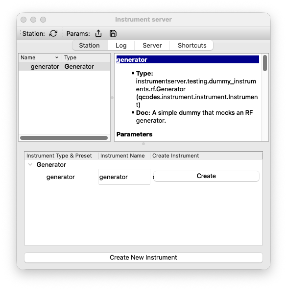
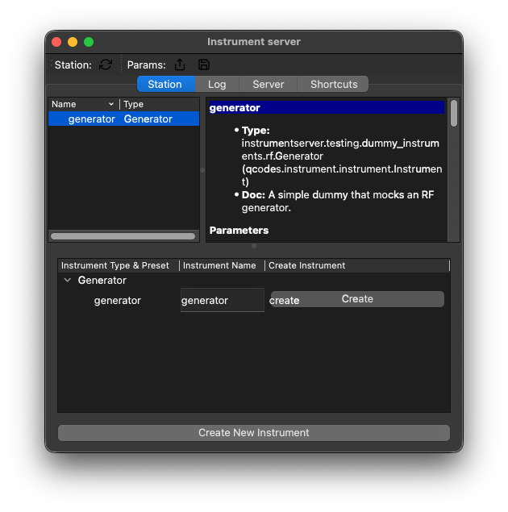

Python client#
The Python Client is the interface to instruments owned by a Server. It represents a remote instrument as a local Proxy Instrument with the same parameters and methods as its real QCoDeS driver. The Quickstart gives a shorter first look at instrumentserver. For a conceptual overview, see How it works.
Each section is self-contained and assumes the same Server remains running.
Connections and instrument discovery#
The examples use a local Server started with:
instrumentserver -p 5555 -a 127.0.0.1
This opens the Server GUI, where instruments appear as the examples create them. The Client examples work in a terminal, a Jupyter notebook, or anywhere you can run python.
Note
Port 5555 and address 127.0.0.1 are the defaults, so plain instrumentserver starts
the same local Server. The -p option selects the request port, and -a adds a
listening address. The Server always includes the loopback address.
The Server covers addresses, ports, and remote connections.
Clients can stay open for an entire measurement or be created only when needed, though we usually keep one for the duration of a measurement. In either case, closing the Client releases the network resources used by its connection to the Server.
The Client is created with the Server’s host and request port (if using defaults, you can just use Client()):
>>> from instrumentserver.client import Client
>>> cli = Client(host="localhost", port=5555)
Once the Client exists, list_instruments() reports the instruments that the Server
already owns:
>>> cli.list_instruments()
[]
find_or_create_instrument adds the dummy RF generator used throughout this page:
>>> generator = cli.find_or_create_instrument(
... "generator",
... "instrumentserver.testing.dummy_instruments.rf.Generator",
... )
>>> cli.list_instruments()
['generator']
find_or_create_instrument returns a Proxy Instrument. If the Server doesn’t have the
requested name, it imports the class and creates the real instrument. If the name
already exists, the Server returns a Proxy for that instrument. The method mirrors
QCoDeS’ find_or_create_instrument.
Instrumentserver, however, matches only by name. For an existing name, it does not check
the class path supplied for creation.
The Server GUI shows the generator as soon as the Server creates it:


Note
cli.get_instrument("generator") covers the case where an instrument already exists and
no creation class is needed. It returns a Proxy without creating an instrument.
A Client remains connected until disconnect() closes its ZMQ connection:
>>> cli.disconnect()
A context manager gives small scripts the same lifecycle. It disconnects the Client when the block exits:
>>> with Client(host="localhost", port=5555) as cli:
... generator = cli.get_instrument("generator")
... print(generator.frequency())
10000000000.0
Note
Constructing Client opens its ZMQ connection but does not perform a handshake with the
Server. The first request, such as list_instruments(), is what confirms that the Server
can reply. Errors and timeouts describes what happens when it
cannot.
Proxy instruments#
A Proxy Instrument is the local Python object that represents one instrument owned by the Server. Measurement code works with the Proxy, while the Server keeps the real QCoDeS driver and its hardware connection. The two objects share a name and a public interface, but they have different jobs.
In the Client process |
In the Server process |
|---|---|
The Proxy Instrument reproduces the driver’s parameters, methods, and submodules. |
The real instrument contains the driver logic, state, and hardware connection. |
A Proxy turns each parameter or method call into a request. |
The Server runs that request on the real instrument and returns the result. |
The Client builds a Proxy from a Blueprint supplied by the Server. That Blueprint describes the part of the driver available remotely, including parameter units, method signatures, docstrings, and the hierarchy of submodules. The Client turns the description into a real local QCoDeS object with parameters and bound methods. Ordinary driver attributes and driver code stay in the Server.
find_or_create_instrument creates or finds the real generator in the Server, then
returns the local object that represents it:
>>> from instrumentserver.client import Client
>>> cli = Client()
>>> generator = cli.find_or_create_instrument(
... "generator",
... "instrumentserver.testing.dummy_instruments.rf.Generator",
... )
Several Clients can hold Proxies for the same instrument. All of those Proxies refer to the one Server-owned driver, so a parameter read always asks the Server for its current value. A Proxy does not maintain a separate local value that can drift away from the hardware.
Most interaction with a Proxy happens through its parameters and driver methods.
generator.frequency is a local Proxy Parameter, while a proxied driver method is a
local bound method. Both forward calls to the corresponding object in the Server.
Parameters and driver methods#
generator.frequency is a local QCoDeS
Parameter
whose get and set commands call the real parameter in the Server. The normal QCoDeS
callable form therefore reads and writes the remote instrument:
>>> print(generator.frequency())
10000000000.0
>>> generator.frequency(5e9)
>>> generator.frequency()
5000000000.0
The explicit QCoDeS methods make the same calls:
>>> generator.frequency.set(6e9)
>>> generator.frequency.get()
6000000000.0
The Blueprint also records whether a parameter supports get and set operations, along with its unit and docstring. Parameter validators remain on the Server. An invalid value is rejected by the real parameter and the Client receives the resulting error.
Driver methods follow the same model. The Client creates a local method with the signature and docstring reported by the Server. Calling it sends the target path, positional arguments, and keyword arguments to the real driver. The return value comes back as the result of the local call.
This dummy resonator has a method that changes its simulated resonance frequency:
>>> resonator = cli.find_or_create_instrument(
... "resonator",
... "instrumentserver.testing.dummy_instruments.rf.ResonatorResponse",
... )
>>> resonator.modulate_frequency(delta=1e6)
modulate_frequency looks like a local bound method, but its body runs on the real
resonator in the Server. The call completes only after the Server returns a response.
Submodules keep their structure#
Blueprints describe submodules recursively. A nested QCoDeS module or instrument channel becomes another Proxy Instrument, with its own parameters and methods at the same attribute path as the real driver.
The dummy instrument below has three submodules named A, B, and C. Parameter access
through multi_channel.A keeps the same shape on both sides of the connection:
>>> multi_channel = cli.find_or_create_instrument(
... "multi_channel",
... (
... "instrumentserver.testing.dummy_instruments.generic."
... "DummyInstrumentWithSubmodule"
... ),
... )
The nested parameter has the same callable interface as a parameter on the top-level instrument:
>>> multi_channel.A.ch0()
0
>>> multi_channel.A.ch0(0.5)
>>> multi_channel.A.ch0()
0.5
>>> multi_channel.A.dummy_function("calibrate", source="client")
True
The Proxy can refresh its Blueprint when the Server-side interface changes. Calling
multi_channel.update() fetches a fresh Blueprint, synchronizes parameters and
submodules, and adds newly reported methods. It does not remove method objects already
installed on the Proxy if the Server stops reporting them.
Values that cross the connection#
Parameter values, method arguments, and method return values travel between processes, so the Client and Server cannot share the same in-memory Python object. Instrumentserver serializes each value for transport and reconstructs it at the other end. This happens in both directions and applies equally to Proxy Parameters and driver methods.
The built-in serialization handles None, booleans, numbers, strings, nested lists and
dictionaries, complex numbers, and NumPy arrays. It also supports richer value objects.
QCoDeS’ FieldVector, for example, can pass through a Proxy Parameter without losing
its type:
>>> from qcodes.math_utils.field_vector import FieldVector
>>> magnet = cli.find_or_create_instrument(
... "magnet",
... "instrumentserver.testing.dummy_instruments.generic.FieldVectorIns",
... )
>>> target = FieldVector(x=0.01, y=0.02, z=0.03)
>>> magnet.field(target)
>>> returned = magnet.field()
>>> print(isinstance(returned, FieldVector))
True
>>> returned.is_equal(target)
True
target and returned are different Python objects. The Client serializes target,
the Server reconstructs a FieldVector for the real parameter, and the return trip
creates another FieldVector in the Client process. Values survive the round trip, but
object identity does not.
>>> id(target)
4385419344
>>> id(returned)
4385419824
Making custom classes serializable#
Custom classes used in parameters and methods use an attributes class attribute to
list the values instrumentserver needs to reconstruct an instance. Once a class provides
that list, its instances can cross the connection as parameter values, method arguments,
or method return values.
For example, a sweep range can preserve its Python type instead of arriving as a plain dictionary:
class SweepWindow:
attributes = ["start", "stop"]
def __init__(self, start: float, stop: float):
self.start = start
self.stop = stop
Instrumentserver serializes a SweepWindow as its listed values plus the class’s import
path. The receiving process imports the class and reconstructs it with
SweepWindow(start=..., stop=...). This places three requirements on a custom value
class:
The class lives in an importable module available to both the Client and Server.
Every name in
attributesis accepted by the constructor as a keyword argument.The listed attribute values are JSON-compatible data.
A class defined only in a notebook or in __main__ cannot be imported by the other
process. Both environments also need a compatible version of the module.
Dataclasses fit this model well because their generated constructors already accept
fields by name. Request and result types can live together in a small module installed
in both environments. Declaring attributes as a ClassVar keeps it out of the
dataclass fields and constructor:
# lab_models.py
from dataclasses import dataclass, field
from typing import ClassVar
@dataclass
class SweepRequest:
center_hz: float
span_hz: float
metadata: dict[str, str] = field(default_factory=dict)
attributes: ClassVar[tuple[str, ...]] = (
"center_hz",
"span_hz",
"metadata",
)
@dataclass
class SweepResult:
frequency_hz: list[float]
magnitude_db: list[float]
attributes: ClassVar[tuple[str, ...]] = (
"frequency_hz",
"magnitude_db",
)
A Server-owned analyzer could accept SweepRequest in a driver method and return
SweepResult:
# lab_drivers.py
from qcodes import Instrument
from lab_models import SweepRequest, SweepResult
class Analyzer(Instrument):
def run_sweep(self, request: SweepRequest) -> SweepResult:
half_span = request.span_hz / 2
return SweepResult(
frequency_hz=[
request.center_hz - half_span,
request.center_hz,
request.center_hz + half_span,
],
magnitude_db=[-50.0, -20.0, -49.0],
)
The user and the driver work with Python objects. The transport code in the Client and Server handles the serialized form between them:
Request: user code passes a
SweepRequest; the Client serializes it to JSON; the Server deserializes it back into aSweepRequest; the driver receives that object.Result: the driver returns a
SweepResult; the Server serializes it to JSON; the Client deserializes it back into aSweepResult; user code receives that object.
The call therefore looks like any other Proxy method call:
>>> from lab_models import SweepRequest, SweepResult
>>> analyzer = cli.find_or_create_instrument(
... "analyzer",
... "lab_drivers.Analyzer",
... )
>>> request = SweepRequest(
... center_hz=5e9,
... span_hz=20e6,
... metadata={"sample": "A"},
... )
>>> result = analyzer.run_sweep(request)
>>> isinstance(result, SweepResult)
True
>>> result.frequency_hz
[4990000000.0, 5000000000.0, 5010000000.0]
>>> result.magnitude_db
[-50.0, -20.0, -49.0]
The values listed in attributes must already be JSON-compatible. A list or dictionary
containing scalar values works, but the serializer does not recursively apply the
attributes protocol to a dataclass stored inside another custom object. A NumPy array
stored as a dataclass field has the same limitation, even though NumPy arrays are
supported when passed directly. Such fields need a JSON-compatible representation,
such as a list, or their own handling before they cross the connection.
Type annotations describe the dataclass but do not control deserialization.
Instrumentserver passes the decoded values directly to the constructor. A class that
requires exact field types can normalize them in __post_init__().
Note
Serialization preserves values, not every container’s exact Python type. Tuples and
sets arrive as lists. A top-level Enum return value keeps its enum type when the enum
class is importable on the receiving side, while enums nested inside lists or
dictionaries become their underlying values.
Warning
The current decoder infers types from scalar text. A string such as "123" arrives as
the integer 123. Method and parameter APIs that require numeric-looking text need an
unambiguous encoding, such as a nonnumeric prefix.
Following the full lifecycle#
The diagram ties the pieces in this section together. It follows a Proxy Instrument
from its Blueprint through a FieldVector parameter set and get, including each point
where instrumentserver serializes or deserializes a value.
- Action 1 Create the Proxy Instrument
Step 01
Ask for a Proxy Instrument
magnet = cli.get_instrument("magnet")asks the Client for a local representation of the Server-owned instrument. The Client sends a Blueprint request; it does not copy the real driver.Step 02
The Server creates a Blueprint
The Server creates a Blueprint from the real
magnetdriver. It describes the remote interface: parameters, methods, and submodules.Step 03
The Blueprint returns
The Blueprint crosses the ZMQ connection as a serialized message. The Client reconstructs it as a new Python object in your script or notebook.
Step 04
The Client builds the Proxy
The Client uses the Blueprint to create
magnet, a local Proxy Instrument with a Proxy Parameter namedfield. The Proxy remains available for later calls.- Action 2 Set the value
Step 05
Create the target value
target = FieldVector(x=0.01, y=0.02, z=0.03)creates the first FieldVector in your script. It has not crossed the connection yet.Step 06
Set through the Proxy
magnet.field(target)passes the value into the Proxy Parameter. The request is serialized, sent to the Server, and reconstructed there as a second FieldVector.Step 07
The real driver stores the value
The Server calls the real
magnet.field(...)parameter with its reconstructed FieldVector. The new object replaces the driver's previousFieldVector(x=0, y=0, z=0)as its current field value.Step 08
The set call completes
After the driver finishes the set, the Server returns a successful response to the Proxy. Only then does
magnet.field(target)return to your code.- Action 3 Read the value
Step 09
Read through the Proxy
returned = magnet.field()sends a get request to the Server. The Proxy does not answer from local state.Step 10
The Server reads the real driver
The Server calls the real
magnet.field()parameter. The driver returns its current FieldVector to the Server.Step 11
Your code receives a new object
The result crosses back as a serialized message and becomes
returned. It has the same coordinates as the driver's current value, but it is a newly reconstructed Python object. The original target remains a third, distinct object in your script.
The serialization lanes leave out their internal fields. The Blueprints and Proxies page covers the wire format and reconstruction machinery.
Parameter snapshots#
The Client can collect parameter values, apply a group of values, and save or restore experiment state. These methods work with any existing Server-owned instrument.
This example starts from fixed generator values so the output is reproducible:
>>> from instrumentserver.client import Client
>>> cli = Client()
>>> generator = cli.find_or_create_instrument(
... "generator",
... "instrumentserver.testing.dummy_instruments.rf.Generator",
... )
>>> generator.frequency(5e9)
>>> generator.power(-42)
>>> generator.rf_on(True)
getParamDict returns a flat dictionary. Each key is the dotted path to a parameter:
>>> values = cli.getParamDict("generator", get=True)
>>> values
{'generator.frequency': 5000000000.0, 'generator.power': -42, 'generator.rf_on': True}
setParameters accepts that same flat shape:
>>> cli.setParameters(
... {
... "generator.frequency": 6e9,
... "generator.power": -30,
... }
... )
paramsToFile writes the generator’s current values to a JSON file:
>>> cli.paramsToFile(
... "generator-parameters.json",
... instruments=["generator"],
... get=True,
... )
The file groups parameter names under each instrument:
{
"generator": {
"frequency": 6000000000.0,
"power": -30,
"rf_on": true
}
}
After the values change, paramsFromFile restores the saved state:
>>> generator.frequency(7e9)
>>> generator.power(-20)
>>> generator.rf_on(False)
>>> cli.paramsFromFile(
... "generator-parameters.json",
... instruments=["generator"],
... )
>>> generator.frequency()
6000000000.0
>>> generator.power()
-30
Both file methods run in the Client process, so relative paths refer to the Client’s
working directory, not the Server’s. Without instruments, paramsToFile saves every
Server instrument and paramsFromFile restores every matching entry in the file.
Warning
setParameters and paramsFromFile cannot currently restore Boolean values.
Deserialization converts True and False to 1.0 and 0.0, which fail QCoDeS Boolean
validation. Numeric values in the same operation still restore correctly. See
issue #152.
Note
setParameters does not accept the nested JSON shown above. It expects flat dotted keys
and currently ignores the nested shape after logging a Server-side error.
paramsFromFile flattens the saved JSON before sending it.
Note
The Parameter Manager has a separate profile workflow. Its
toFile and fromFile methods run on the Server, preserve units, and can create or
remove hierarchical parameters. Managed profiles use this workflow rather than a
snapshot of existing instruments.
disconnect() closes the Client used for the snapshot example:
>>> cli.disconnect()
Errors and timeouts#
By default, the Client turns Server-side failures into local exceptions. The dummy generator, for example, accepts frequencies only up to 20 GHz:
>>> from instrumentserver.client import Client
>>> cli = Client(timeout=0.2)
>>> generator = cli.find_or_create_instrument(
... "generator",
... "instrumentserver.testing.dummy_instruments.rf.Generator",
... )
>>> try:
... generator.frequency(100e9)
... except Exception as exc:
... rejected = exc
>>> type(rejected) is Exception
True
>>> "generator_frequency" in str(rejected)
True
The Client currently raises a generic Exception containing the original Server-side
message. With the default raise_exceptions=True, a failed operation cannot look like a
successful call that returned None.
A timeout is different from a Server-side error. This Dummy Instrument has a method that takes longer than the Client’s deadline:
>>> import time
>>> slow = cli.find_or_create_instrument(
... "slow",
... "instrumentserver.testing.dummy_instruments.generic.DummyInstrumentTimeout",
... )
>>> expected_random = slow.get_random()
>>> try:
... slow.get_random_timeout(wait_time=0.5)
... except RuntimeError as exc:
... print(exc)
Server did not reply before timeout.
>>> time.sleep(0.4)
>>> slow.get_random() == expected_random
True
The Client does not retry a timed-out request. It discards the old ZMQ socket and connects a replacement so later requests can work. The replacement connection does not rerun the timed-out operation.
Warning
A timeout means that no reply arrived before the deadline. It does not mean the Server cancelled the operation. The Server worker continues and may still change the hardware. For a non-idempotent operation, the instrument state is the only reliable indication of whether the original call completed.
After disconnect(), the Client cannot be reused. Another session requires a new Client:
>>> cli.disconnect()
Note
Client(raise_exceptions=False) logs failures and usually returns None. This behavior
fits long-running UI infrastructure with its own error reporting. In measurement code,
None is ambiguous because it can also be a valid method result. The default
raise_exceptions=True keeps those cases distinct.